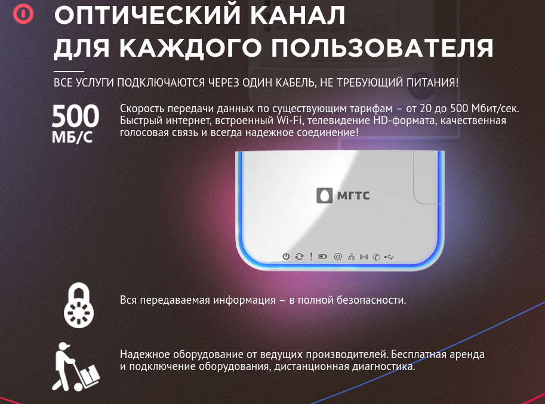
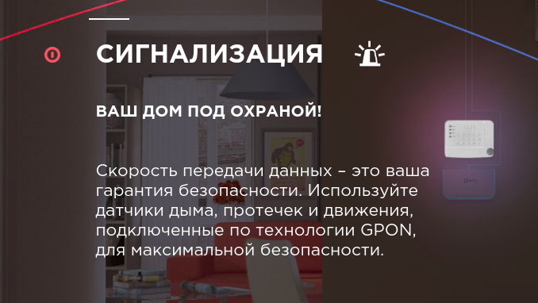
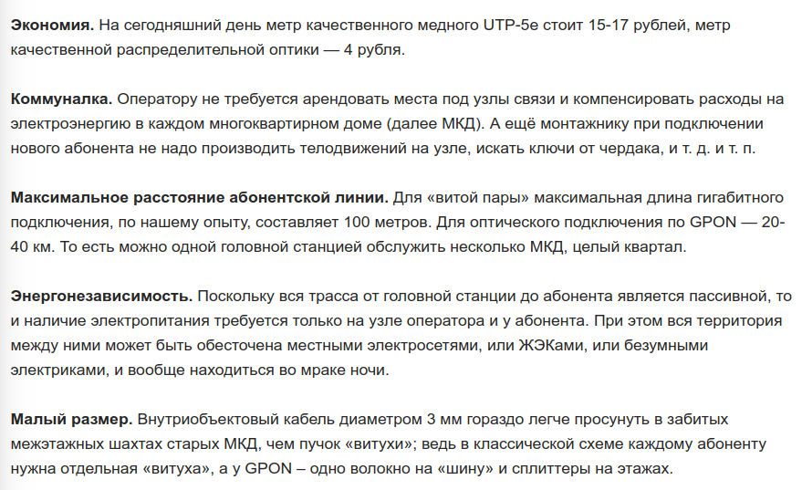
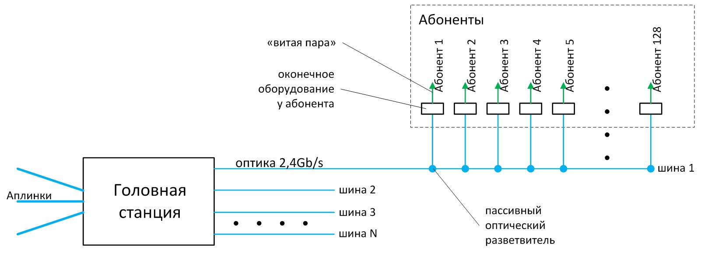

| Плюсы | Минусы | |
|---|---|---|
|
Кабельная система
(витая пара) |
|
|
|
Оптоволоконная система
(оптоволокно) |
|
|
О технологии
GPON – это широкополосные сети мультисервисного доступа, где по одному кабелю предоставляются услуги интернета, телефонии и телевидения с гарантированным качеством обслуживания. GPON это ваш персональный оптоволоконный канал с возможностью пропускной способности до 1 Гб/сек.
Обеспечение доступа в Интернет по технологии GPON предполагает замену устаревших медных кабелей на более прогрессивные оптоволоконные, обладающие значительно большей пропускной способностью. Сигнал по такому кабелю проходит посредством светового, а не электрического импульса. Световой импульс проходит по стеклянному волокну, обеспечивая более надежный сигнал и высокую скорость при низких энергозатратах.
Технология GPON предусматривает прокладку оптоволоконного кабеля непосредственно в квартиру абонента, а не ко всему зданию, что гарантирует постоянную скорость доступа в Интернет и исключает сбои в работе из-за перегрузки сети. Для подключения к технологии GPON абоненту бесплатно устанавливается модем — ONT (Optical Network Terminal), благодаря которому подключение всех услуг в дальнейшем происходит удаленно и в одном устройстве. Модем имеет встроенный Wi-Fi, по сети которого можно работать без проводов с любого устройства.
Оборудование
Модем ONT, необходимый для подключения, устанавливается в квартире пользователя, что позволяет подключать дополнительные услуги удаленно. Модем уже имеет встроенный Wi-Fi. Подключение ONT и само оборудование совершенно бесплатно для пользователей.
Как изменится дом с технологией GPON?
Охрана
Интернет
Телевидение
Телефон
Ethernet или GPON?
Разбираемся в технологиях фиксированного интернета
/* Мнение о GPON челика с habr'a */
Технология GPON в многоквартирных домах – будущее интернет-провайдинга или маркетинговый пузырь?
Предлагаю, основываясь на имеющемся практическом опыте, вкратце пробежаться по тем преимуществам, которые реально даёт GPON.
Схематично сеть GPON можно изобразить так:
